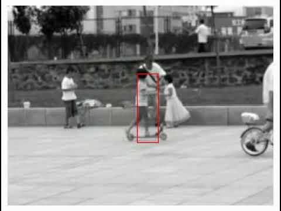

Graduate Coursework · CMU 16-720
Graduate Coursework · CMU 16-720
Computer vision projects.
Six projects from the graduate Computer Vision course at Carnegie Mellon, running from classical feature-based methods through multi-view geometry to learned representations.

Project 1
Spatial pyramid matching for scene classification
Determining the scene an image was taken in from a bag of visual words. A plain
histogram throws away all spatial information, so spatial pyramid matching adds
progressively finer grid subdivisions to capture where features appear, not just
which ones.

Project 2
Augmented reality with planar homographies
Matching points with a BRIEF descriptor, estimating the homography between two
views of the same plane, and warping a new cover onto a textbook. Extended to a
full AR application overlaying video frame by frame.

Project 3
Lucas-Kanade tracking
Tracking via optical flow: a template tracker with drift correction, then dominant
affine motion estimation that finds moving objects by modelling the background and
treating whatever disagrees as the target, plus the inverse-compositional
extension for efficiency.

Project 4
Two-view 3D reconstruction
From two images to a metric point cloud: the fundamental matrix via the eight-point
algorithm, the essential matrix from calibrated intrinsics, and triangulation, with
automatic matching along epipolar lines.

Project 5
Neural networks for character recognition
Reading handwritten text out of an image, which is as much classical image
processing as learning: the characters have to be found, boxed, grouped by line and
sorted before the network sees anything. Plus autoencoders, and a PyTorch CNN at
90.2% against the fully connected network's 76%.

Project 6
Photometric stereo
Shape from shading under a set of lighting directions, first calibrated to recover
albedo and normals, then uncalibrated, where the bas-relief ambiguity means the
images genuinely cannot distinguish between a whole family of shapes.